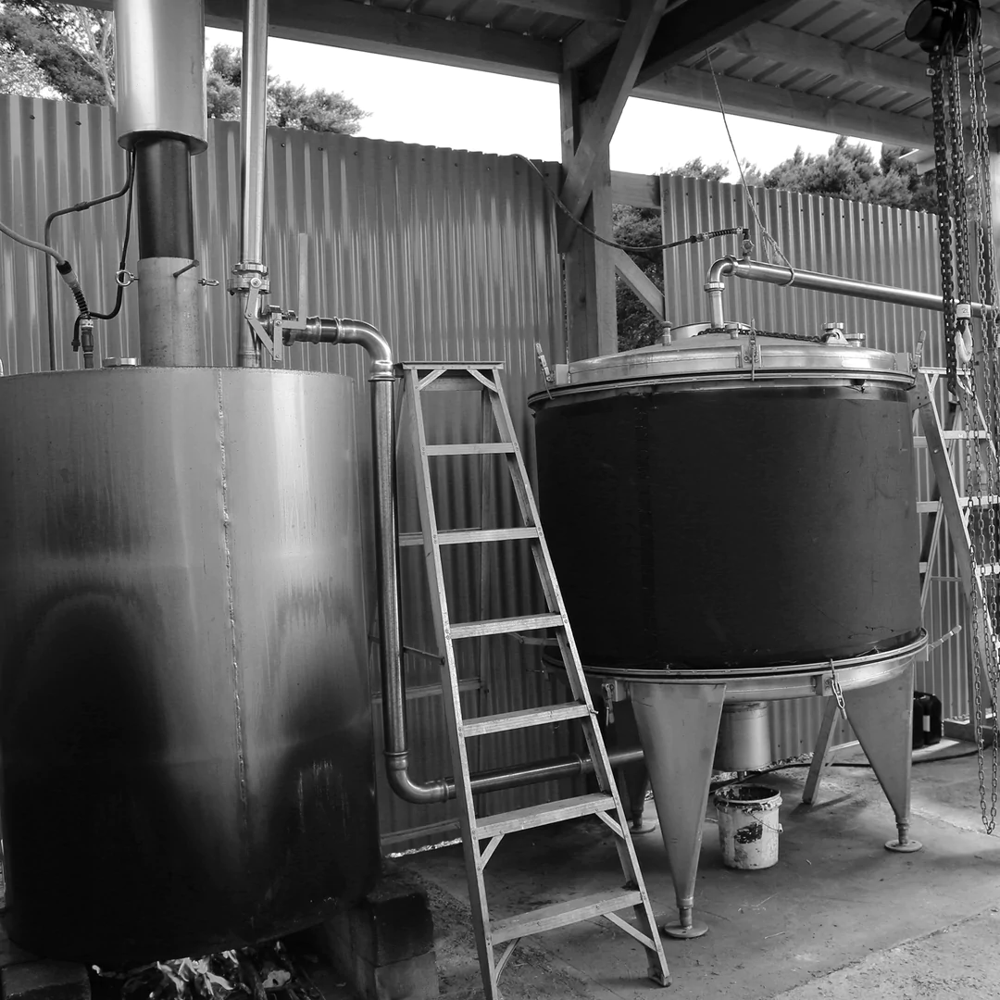

Latest Products
Shop All
The Collection
We have a range of balms, oils, creams & masks for whatever you are after.
Shop our most popular products.
SHOP FULL COLLECTION
SHOP NOW
It's wonderful that the production of this soap supports the local community and that the ingredients are native to NZ. - Fiona Morouco
I love discovering businesses founded by passionate individuals who are dedicated to minimizing harm, respecting people and te planet and creating with care. Aotea embodies all of those attributes and entwines them with a sense of community and culture. - Niccii Kugler
A wonderful example of a company embracing it's cultural and loval community, spreading awareness, goodwill and social responsibility. Love the concept of tikanga maori and educating the consumer about the Maori ways. - Sigourney Cantelo
I buy the Aotea range because of their commitment to sustainability. Their facilities on Aotea are powered by a solar farm and I'm excited to see how they turn their business into a complete circular economy. - K. Hansen
